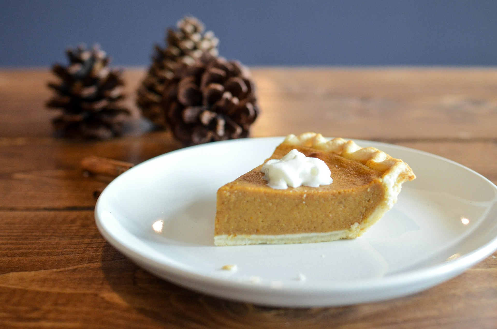

Pumpkin Pie

Description
Indulge in the warmth of autumn with this classic pumpkin pie recipe, featuring a creamy spiced filling nestled in a flaky, golden crust. Perfectly balanced with hints of cinnamon, nutmeg, and cloves, this pie is the quintessential holiday dessert that will delight your senses with every bite.
Ingredients
- 1 1/2 cups pumpkin puree
- 1 cup evaporated milk
- 2 large eggs
- 3/4 cup granulated sugar
- 1/2 teaspoon ground cinnamon
- 1/4 teaspoon ground nutmeg
- 1/4 teaspoon ground cloves
- 1/2 teaspoon salt
- 1 pie crust, unbaked
Steps
- Preheat your oven to 425°F (220°C).
- In a large bowl, whisk together the pumpkin puree, evaporated milk, eggs, sugar, cinnamon, nutmeg, cloves, and salt until well combined.
- Pour the mixture into the unbaked pie crust.
- Bake in the preheated oven for 15 minutes.
- Reduce the oven temperature to 350°F (175°C) and continue baking for an additional 40-50 minutes, or until a knife inserted into the center comes out clean.
- Allow the pie to cool completely on a wire rack before serving.
- Enjoy your delicious pumpkin pie!